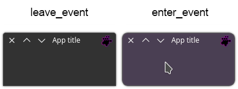

QApplicationWindow
Inherits from QMainWindow

Overview
This widget is the main window of the application, and the main widget of this project. It was built under QMainWindow and some modifications were made to achieve the CSD feature.
Although much can be changed in the future, some particularities need to be
highlighted:
- The event_filter method needed, at least temporarily, to be
rewritten and is therefore not currently accessible. So consider using specific
event methods like enter_event and leave_vent.
-
A pre-configured central widget already exists and is a central part of the QApplicationWindow. You will get it for use through the
central_widgetmethod. -
The
set_object_namemethod does not work for the QApplicationWindow nor for its central widget. To change the QSS style you need to use the base name "QApplicationWindow{...}".
Methods
Only new ones. See the QMainWindow documentation for more.
central_widget
Signature: central_widget(self) -> QtWidgets.QWidget:
A pre-configured QWidget. Is a central part of the QApplicationWindow. The main layout of your application must be added to it.
self.layout = QtWidgets.QVBoxLayout()
self.central_widget().set_layout(self.layout)
is_decorated
Signature: is_decorated(self) -> bool:
Returns False if it is an undecorated CSD window and True if it is
server-side decorated.
platform_settings
Signature: platform_settings(self) -> PlatformSettings
A PlatformSettings object that brings information from the user's platform that is relevant to the composition of the window.
reset_style
Signature: reset_style(self) -> None:
Changes the window style back to the default.
Modified methods
As already discussed, the modified methods cannot be used for this widget. The alternative approach specified in the overview must be used.
-
event_filter
-
set_object_name
Examples
A highly discouraged minimal example would be:
app = QtWidgets.QApplication(sys.argv)
window = QtWidgetsX.QApplicationWindow()
window.show()
sys.exit(app.exec())
This would give you a little window that can be resized in any direction. However, there is no button to close the application and, depending on your platform, it may be difficult to close the application:
A better minimal example in this situation includes adding a headerbar to access the window control buttons:
class Window(QtWidgetsX.QApplicationWindow):
def __init__(self):
super().__init__()
self.main_layout = QtWidgets.QVBoxLayout()
self.central_widget().set_layout(self.main_layout)
self.main_layout.set_contents_margins(0, 0, 0, 0)
self.main_layout.set_alignment(QtCore.Qt.AlignTop)
self.headerbar = QtWidgetsX.QHeaderBar(self)
self.main_layout.add_widget(self.headerbar)
app = QtWidgets.QApplication(sys.argv)
window = Window()
window.show()
sys.exit(app.exec())
Note that a central widget with appropriate settings already exists. As it is already accessed directly, there is no need to create one.
self.central_widget().set_layout(self.main_layout)
Also note that the headerbar widget is independent, meaning you can place it wherever you want, which is why we aligned it at the top.
self.main_layout.set_contents_margins(0, 0, 0, 0)
self.main_layout.set_alignment(QtCore.Qt.AlignTop)
This is the result:

A more complete minimal example
In this example, we will add the os library to add an icon with a dynamic
path. The icon, once configured in the window, will be automatically recognized
by the header bar.
The title is not automatically recognized by the header bar as in the case of the icon, because not in all use cases a window needs to have the title displayed. In our case, if we want to see the window title, we need to manually redirect it to the header bar.
#!/usr/bin/env python3
import os
import sys
from PySide6 import QtCore, QtGui, QtWidgets
from PySideX import QtWidgetsX
from __feature__ import snake_case
SRC_DIR = os.path.dirname(os.path.abspath(__file__))
sys.path.append(SRC_DIR)
class Window(QtWidgetsX.QApplicationWindow):
def __init__(self, *args, **kwargs) -> None:
super().__init__(*args, **kwargs)
# Window icon
icon_path = os.path.join(SRC_DIR, 'icon.svg')
window_icon = QtGui.QIcon(QtGui.QPixmap(icon_path))
self.set_window_icon(window_icon)
# Layout
self.main_layout = QtWidgets.QVBoxLayout()
self.main_layout.set_contents_margins(0, 0, 0, 0)
self.main_layout.set_alignment(QtCore.Qt.AlignTop)
self.central_widget().set_layout(self.main_layout)
# Headerbar
self.headerbar = QtWidgetsX.QHeaderBar(self)
self.main_layout.add_widget(self.headerbar)
# Window title
self.set_window_title('App title')
self.headerbar.set_text(self.window_title())
if __name__ == '__main__':
app = QtWidgets.QApplication(sys.argv)
window = Window()
window.show()
sys.exit(app.exec())
This is the result:

Using all concepts
We created the following example to use all the practical concepts in this
window, such as using specific event methods instead of event_filter, and
also using the "QApplicationWindow" id for QSS style.
#!/usr/bin/env python3
import os
import sys
from PySide6 import QtCore, QtGui, QtWidgets
from PySideX import QtWidgetsX
from __feature__ import snake_case
SRC_DIR = os.path.dirname(os.path.abspath(__file__))
sys.path.append(SRC_DIR)
class Window(QtWidgetsX.QApplicationWindow):
def __init__(self, *args, **kwargs) -> None:
super().__init__(*args, **kwargs)
# Window icon
icon_path = os.path.join(SRC_DIR, 'icon.svg')
window_icon = QtGui.QIcon(QtGui.QPixmap(icon_path))
self.set_window_icon(window_icon)
# Layout
self.main_layout = QtWidgets.QVBoxLayout()
self.main_layout.set_contents_margins(0, 0, 0, 0)
self.main_layout.set_alignment(QtCore.Qt.AlignTop)
self.central_widget().set_layout(self.main_layout)
# Headerbar
self.headerbar = QtWidgetsX.QHeaderBar(self)
self.main_layout.add_widget(self.headerbar)
# Window title
self.set_window_title('App title')
self.headerbar.set_text(self.window_title())
def enter_event(self, event: QtGui.QEnterEvent) -> None:
self.set_attribute(QtCore.Qt.WA_TranslucentBackground)
self.set_style_sheet(
'QApplicationWindow {'
' background-color: rgba(65, 50, 75, 0.8);'
' border-radius: 10px;'
' border: 1px solid #555;}')
def leave_event(self, event: QtGui.QEnterEvent) -> None:
self.reset_style()
if __name__ == '__main__':
app = QtWidgets.QApplication(sys.argv)
window = Window()
window.show()
sys.exit(app.exec())
This is the result:
